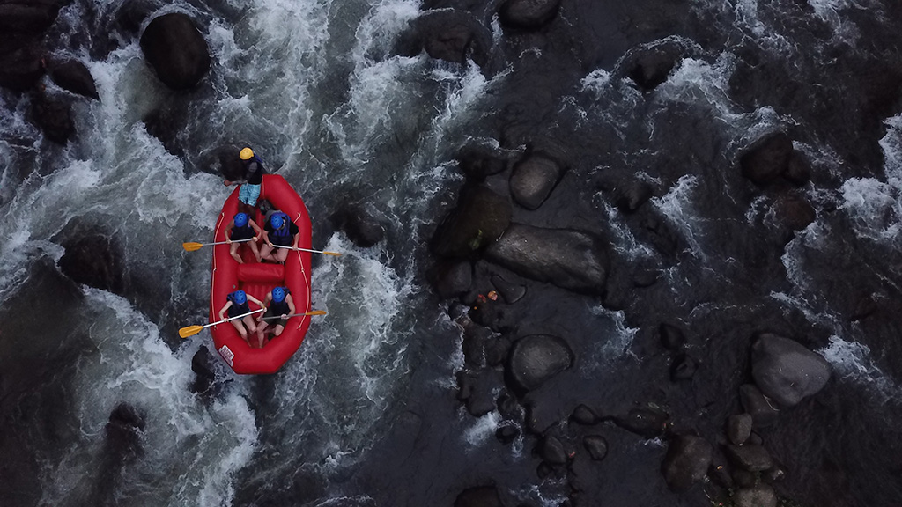
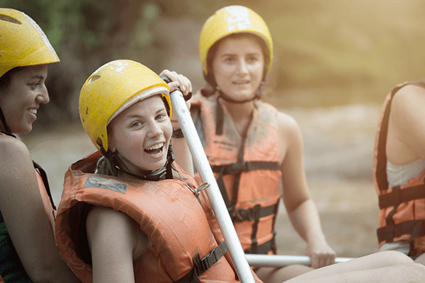

Welcome to Rapid Adventures: Where Thrills Meet Nature!Immerse yourself in the heart-pounding rush of white-water rafting as you navigate untamed rapids, surrounded by breathtaking landscapes. Our expert guides will lead you through adrenaline-fueled descents, where every twist and turn promises an unforgettable experience. Whether you are a seasoned rafter or a first-timer, get ready to conquer the wild currents and create memories that surge with excitement. Dive into the unknown, ride the waves, and let the river carve your story. Book your next adventure with Rapid Adventures today!”


Rapid Adventures
History
Whitewater rafting, with its heart-pounding rapids and adrenaline-fueled descents, has a captivating history that dates back centuries. Here is a fascinating moments from the annals of this exhilarating sport:
The first recorded attempt to navigate the Snake River in Wyoming took place in 1811. However, with no training, experience, or proper equipment, the river proved too treacherous. It earned the nickname “Mad River.”
Adventure Awaits You!